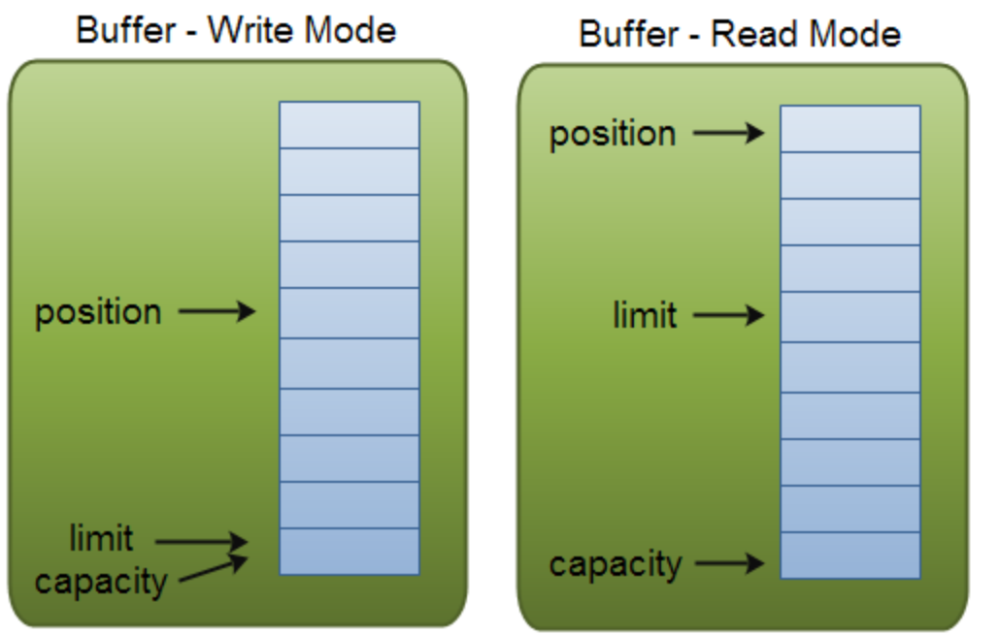
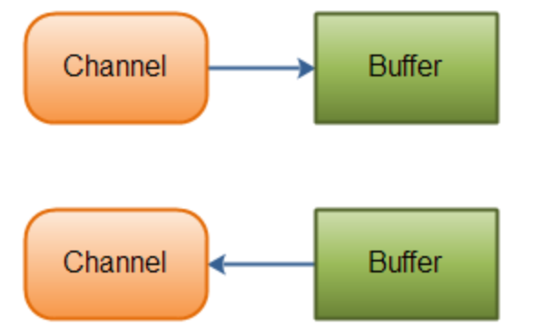
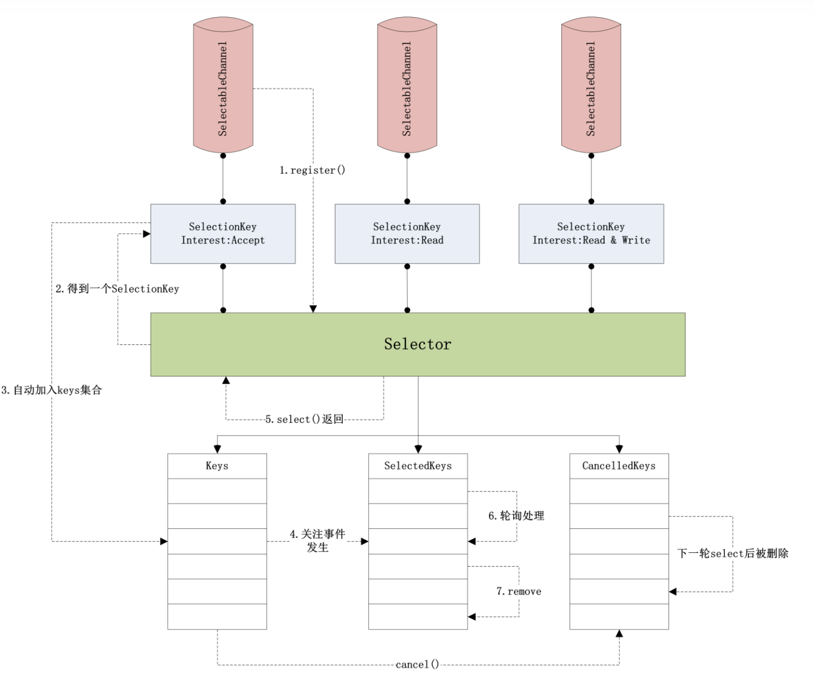
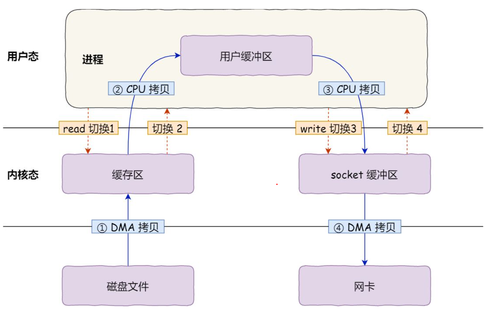
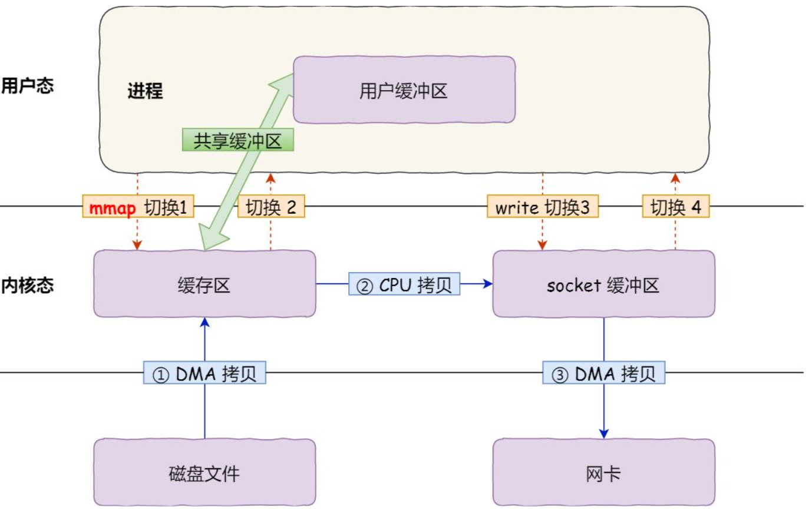

Java NIO
1. 介绍
传统的服务端同步阻塞 IO BIO（Blocking IO）调用 read 之后，如果接收缓冲区中没有数据，会一直阻塞直到接收数据。在 IO多路复用 中提到，传统的 BIO + 多线程的解决方案，大量连接将产生大量线程，难以解决 C10K 问题，需要使用 IO 多路复用解决。
NIO（Non-blocking IO，也称 New IO），是 Java 的一种同步非阻塞 IO 模型，底层使用了 IO 多路复用，可以有效解决 C10K 问题。
Java NIO 有三个核心组件，Buffers、Selector 和 Channel，将在下文中陆续介绍。
2. Buffer
2.1 基本用法
Buffer 是存储数据的缓冲区，提供读写操作，底层使用数组实现。使用 Buffer 一般遵守 4 个步骤：
写入数据到
Buffer调用
flip()方法- 从
Buffer中读取数据 - 调用
clear()或compact()方法清除缓存
向 Buffer 写入数据后，内部会记录写入数据量，一旦需要读取数据，需要通过 flip() 方法将 Buffer 从写模式切换到读模式。在读模式下，可以读取之前写入到 Buffer 的所有数据。
当读完所有数据之后，需要清空缓冲区，有两者方式。clear() 清空整个缓冲区，compact() 清除已经读过的数据。
下面是一个使用举例：
1 | RandomAccessFile aFile = new RandomAccessFile("test.txt", "rw"); |
2.2 实现
Buffer 在内部维护 4 个核心变量：
capacity：缓冲区的最大容量，设定后不可改变limit：缓冲区的数据个数，flip()调用前等于capacipty，调用后等于positionposition：下一个要读写的元素下标，由get()和put()自动更新mark：记录当前position的位置，可以通过reset()恢复到mark的位置

2.3 类型
2.3.1 Heap Buffer
Heap Buffer 在堆中分配，在 Java NIO 中，Buffer 有以下类型：
ByteBuffer、CharBuffer、DoubleBuffer、FloatBuffer、IntBuffer、LongBuffer、ShortBufferMappedByteBuffer
其中第一类 Buffer 代表了不同的数据类型，通过以下方式创建。
1 | ByteBuffer buffer = ByteBuffer.allocate(1024); |
而 MappedByteBuffer 是 FileChannel 提供的内存映射操作，使用 map 方法获取：
1 | /** |
MappedByteBuffer底层依赖mmap实现，将在下文介绍。
其中 mode 可取值为：
READ_ONLYREAD_WRITEPRIVATE：修改只对缓冲区有效，不会作用到文件
MappedByteBuffer 的使用如下：
1 | public static void main(String args[]){ |
2.3.2 Direct Buffer
除了 Heap Buffer，Buffer 还可分为 Direct Buffer，Direct Buffer 在直接内存分配，在 GC 时不会移动。使用 DirectBuffer 可以减少一次内存拷贝，Heap Buffer 写入前，会先创建一个 Direct Buffer，再去执行真正的写操作，这是因为在写入时，这个 Buffer 的地址不能够变化，而 Heap Buffer 可能在 GC 过程中被移动。所以在调用底层写入之前，数据要在堆外内存。但是 Direct Buffer 依赖 malloc 实现，效率相比堆内创建更低，并且更不宜维护，通常会使用内存池来提高性能。
3. Channel
Channel 与 java.io 中的流类似，但有以下不同：
Channel是双向的，支持写入和读取；Channel和Buffer强依赖，读写都需要通过Buffer。

Java NIO 中的 Channel 可分为：
- 文件：
FileChannel，用于读写文件 - socket
ServerSocketChannel：用于服务端，可以监听 TCP 连接SocketChannel：通过 TCP 读写网络数据DatagramChannel：通过 UDP 读写网络数据
4. Selector
Selector 绑定了多个 Channel 和事件，调用 select 将阻塞 到至少有一个 Channel 触发事件，select() 返回就绪的 Channel 个数。
事件类型包括：
SelectionKey.OP_READ：读就绪SelectionKey.OP_WRITE：写就绪SelectionKey.OP_CONNECT：客户端连接成功，用于 socket 通道SelectionKey.OP_ACCEPT： 服务器接收新连接，用于 socket 通道
jdk 1.7 之前的 select 可能有空轮询问题，这是由于部分 Linux 内核的底层存在假唤醒问题，此时 select() 返回 0，但是 jdk 官方将这个问题甩锅给操作系统，没有进行修改，后续造成大量问题。
对于这个问题，使用 NIO 封装的 netty 的处理方式是记录 select() = 0 的持续次数，到达阈值则重新构建 Selector。
使用如下：
1 | public class Server { |

5. 零拷贝
Java NIO 底层除了使用 IO 多路复用外，还使用了零拷贝技术。
通过网络发送文件通常使用 read 和 write 函数，需要经历 4 次拷贝：
- 第 1 次：将磁盘的数据拷贝到操作系统内核的的缓冲区，通过 DMA 实现；
- 第 2 次：将内核缓冲区的数据拷贝到用户进程缓冲区，通过 CPU 实现；
- 第 3 次：将用户进程缓冲区的数据拷贝到内核 socket 的缓冲区，通过 CPU 实现；
- 第 4 次：将 socket 缓冲区的数据拷贝到网卡中，通过 DMA 实现。

上述过程开销严重，要想提高文件的传输效率，必须减少 内存拷贝 的次数，通常有两种实现方式：
- mmap
- sendfile
mmap
mmap 可以将内核缓冲区的数据映射到用户空间，共享缓冲区，内核和用户空间之间就不需要进行拷贝操作，此时传输文件的拷贝次数如下：
- 将磁盘数据拷贝到内核缓冲区，与用户程序共享；
- 用户程序调用
write，操作系统将内核缓冲区的拷贝到 socket 缓冲区，由 CPU 完成； - 将 socket 缓冲区的数据拷贝到网卡中，通过 DMA 实现。

这种方式减少了内核缓冲区到用户空间的 1 次拷贝。
sendfile
sendfile 函数可以将内核缓冲区的数据直接拷贝到 socket 缓冲区，而不用经过用户空间，效果如下：

数据拷贝都使用 DMA 实现，没有内存层面的拷贝，这被称为零拷贝。